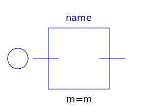
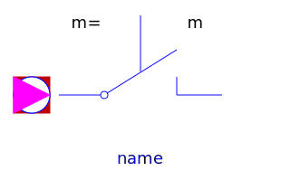

This package contains analog electrical multiphase components with idealized behaviour, like thyristor, diode, switch, transformer.
| Name | Description |
|---|---|
| Multiphase ideal diode | |
| Multiphase ideal thyristor | |
| Multiphase ideal GTO thyristor | |
| Multiphase ideal commuting switch | |
|
|
Multiphase ideal intermediate switch |
| Multiphase ideal transformer | |
|  Idle | Multiphase idle branch |
| Multiphase short cut branch | |
|  IdealOpeningSwitch | Multiphase ideal opener |
| IdealClosingSwitch | Multiphase ideal closer |
| Multiphase opener with arc | |
| Multiphase closer with arc |